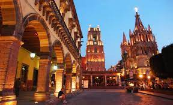
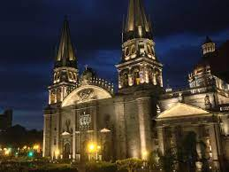

Lugares
En esta seccion comentare los lugares que e visitado y han sido importantes por mi.
QUERETARO CENTRO
en el año 2020 cuando vivia en Queratro solia visitar uno de los lugares mas relajantes para mi, en el cual solia caminar con mi mama, despues en la tarde soliamos ir a comer al restaurante Sor Juana, comiamos cortes de carne y sopas, sinceramnete teniamos un buen rato y en ocasiones hacia mucho frio con viento.
GUADALAJARA CENTRO
En vacasiones solia ir con mi familia a guadalajara y conocer su gran ciudad, nuestra actividad favorita era recorrer los grandes centros comerciales, comprar ropa y probar comida en nuestros restaurantes favoritos. lo que me gusta de este lugar es su agradable clima y el ambiente de la ciudad muy alegre, me gustaria regresar ahi.